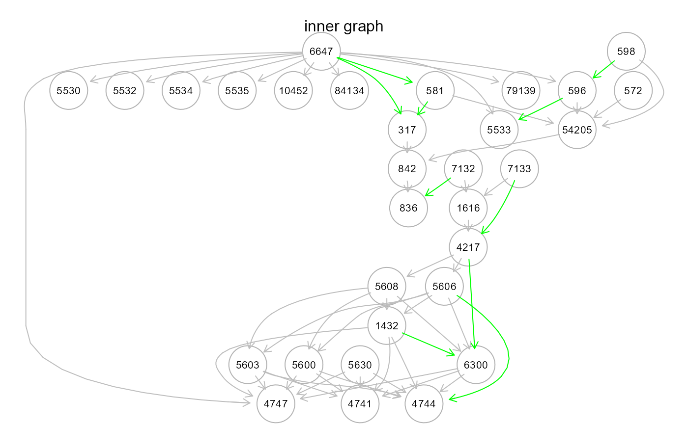
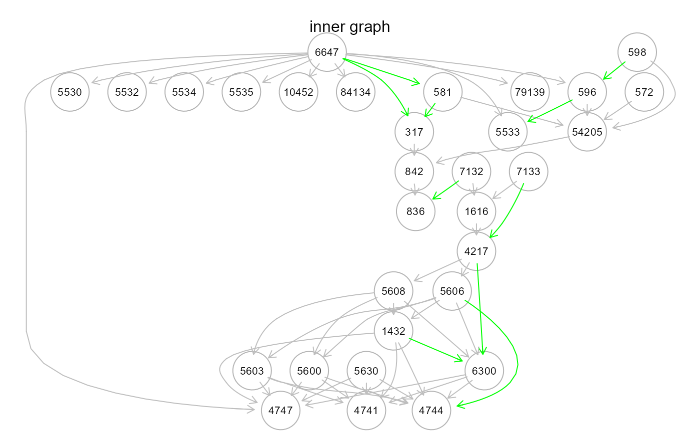

Four model search strategies are implemented combining
SEMdag(), SEMbap(), and resizeGraph() functions.
All strategies estimate a new graph by 1) adjusting (BAP deconfounding) the
the data matrix and 2) re-sizing the output DAG.
Usage
modelSearch(
graph,
data,
gnet = NULL,
d = 2,
search = "basic",
beta = 0,
method = "BH",
alpha = 0.05,
verbose = FALSE,
...
)Arguments
- graph
Input graph as an igraph object.
- data
A matrix or data.frame. Rows correspond to subjects, and columns to graph nodes (variables).
- gnet
Reference directed network used to validate and import nodes and interactions.
- d
Maximum allowed geodesic distance for directed or undirected shortest path search. A distance
d = 0disables shortest path search (fixed insearch = "basic"), whiled = 1(fixed insearch = "direct") only search for directed links (i.e., no mediators are allowed). A distanced> 1 (defaults tod = 2for "outer" and "inner" strategies), will search for shortest paths with at mostd- 1 mediators between nodes sharing a significant estimated interaction. Connectors are imported from the reference interactome, as specified by the argumentgnet. If the edges of the reference interactome are weighted by P-value, as defined by theE(gnet)$pvattribute, the shortest path with the smallest sum of weights will be chosen (e.g., seeweightGraphfor graph weighting options).- search
Search strategy. Four model search strategies are available:
"outer". The estimated DAG is re-sized using
resizeGraphto find new indirect paths (i.e., inferred directed connections that may hide new mediators). New interactions and connectors will be searched and imported from the reference network (argumentgnet, see above). Both DAG and extended graph complexity can be controlled withbeta> 0 andd> 1 arguments, respectively. The term "outer" means that new model mediator variables are imported from an external resource (i.e., the reference network)."inner". This strategy is analogous to the "outer" one, but disables external mediator search. In other words, new indirect paths are generated by adding new interactions of the input model, so that mediators will be nodes already present in the input graph. The reference network is still used to validate new model paths. Also in this case,
beta> 0 andd> 1 are used."direct". The input graph structure is improved through direct (i.e., adjacent) link search, followed by interaction validation and import from the reference network, with no mediators (i.e.,
d = 1)."basic" (default). While the previous strategies rely on the input graph and the reference network to integrate knowledge to the final model, the "basic" strategy is data-driven. The input graph is needed to define the topological order. The argument
gnetis set to NULL (i.e., no reference network is needed) and argumentd = 0. Model complexity can be still controlled by settingbeta> 0.
- beta
Numeric value. Minimum absolute LASSO beta coefficient for a new interaction to be retained in the estimated DAG backbone. Lower
betavalues correspond to more complex DAGs. By default,betais set to 0 (i.e., maximum complexity).- method
Multiple testing correction method. One of the values available in
p.adjust. By default,methodis set to "BH" (i.e., Benjamini-Hochberg multiple test correction).- alpha
Significance level for false discovery rate (FDR) used for local d-separation tests. This argument is used to control data de-correlation. A higher
alphalevel includes more hidden covariances, thus considering more sources of confounding. Ifalpha = 0, data de-correlation is disabled. By default,alpha = 0.05.- verbose
If TRUE, it shows intermediate graphs during the execution (not recommended for large graphs).
- ...
Currently ignored.
Value
The output model as well as the adjusted dataset are returned as a list of 2 objects:
"graph", the output model as an igraph object;
"data", the adjusted dataset.
Details
Search strategies can be ordered by decreasing conservativeness
respect to the input graph, as: "direct", "inner", "outer", and "basic".
The first three strategies are knowledge-based, since they require an
input graph and a reference network, together with data, for
knowledge-assisted model improvement. The last one does not require
any reference and the output model structure will be data-driven.
Output model complexity can be limited using arguments d and
beta.
While d is fixed to 0 or 1 in "basic" or "direct", respectively;
we suggest starting with d = 2 (only one mediator)
for the other two strategies.
For knowledge-based strategies, we suggest to to start with
beta = 0. Then, beta can be relaxed (0 to < 0.1) to improve
model fitting, if needed. Since data-driven models can be complex,
we suggest to start from beta = 0 when using the "basic" strategy.
The beta value can be relaxed until a good model fit is obtained.
Argument alpha determines the extent of data adjustment: lower alpha
values for FDR correction correspond to a smaller number of significant
confounding factors, hence a weaker correction
(default alpha = 0.05).
Author
Mario Grassi mario.grassi@unipv.it
Examples
# \donttest{
# Comparison among different model estimation strategies
# Nonparanormal(npn) transformation
als.npn <- transformData(alsData$exprs)$data
#> Conducting the nonparanormal transformation via shrunkun ECDF...done.
# Reference network (KEGG interactome)
gnet <- kegg
# Models estimation
m1 <- modelSearch(graph = alsData$graph, data = als.npn, gnet = gnet,
search = "direct", beta = 0, alpha = 0.05)
#> Step1: BAP deconfounding...
#> Step2: DAG estimation...
#> Step3: DAG resize (remove edges/add nodes)...
#>
#> Done.
m2 <- modelSearch(graph = alsData$graph, data = als.npn, gnet = gnet,
d = 2, search = "inner", beta = 0, alpha = 0.05)
#> Step1: BAP deconfounding...
#> Step2: DAG estimation...
#> Step3: DAG resize (remove edges/add nodes)...
#>
#> Done.
m3 <- modelSearch(graph = alsData$graph, data = als.npn, gnet = gnet,
d = 2, search = "outer", beta = 0, alpha = 0.05)
#> Step1: BAP deconfounding...
#> Step2: DAG estimation...
#> Step3: DAG resize (remove edges/add nodes)...
#>
#> Done.
m4 <- modelSearch(graph = alsData$graph, data = als.npn, gnet = NULL,
search = "basic", beta = 0.1, alpha = 0.05)
#> Step1: BAP deconfounding...
#> Step2: DAG estimation...
#> Step3: DAG resize (remove edges/add nodes)...
#>
#> None DAG resize for basic search !
#>
#> Done.
# Graphs
#old.par <- par(no.readonly = TRUE)
#par(mfrow=c(2,2), mar= rep(1,4))
gplot(m1$graph, main = "direct graph")
 gplot(m2$graph, main = "inner graph")

gplot(m3$graph, main = "outer graph")
gplot(m2$graph, main = "inner graph")

gplot(m3$graph, main = "outer graph")
 gplot(m4$graph, main = "basic graph")
gplot(m4$graph, main = "basic graph")
 #par(old.par)
# }
#par(old.par)
# }